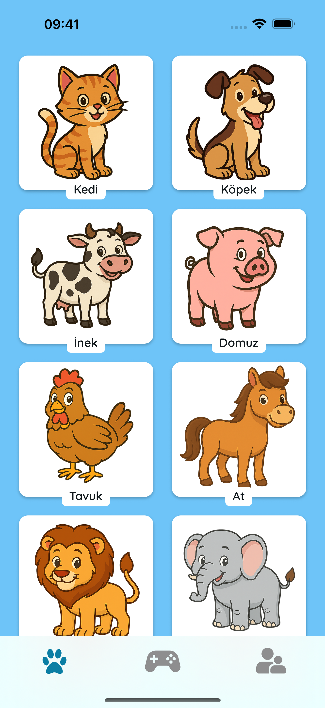
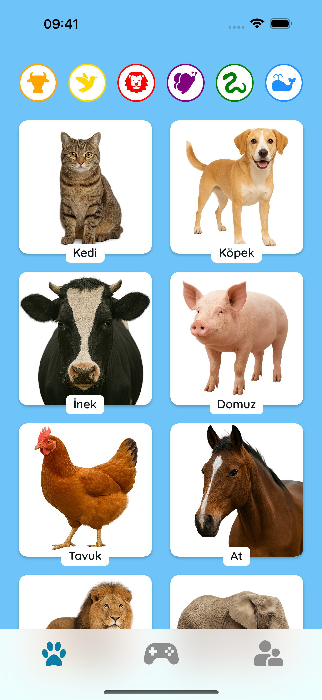
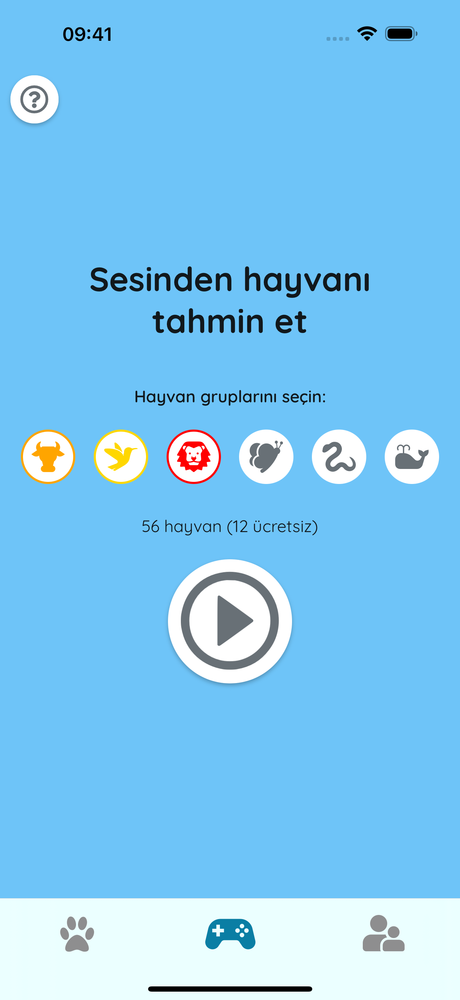
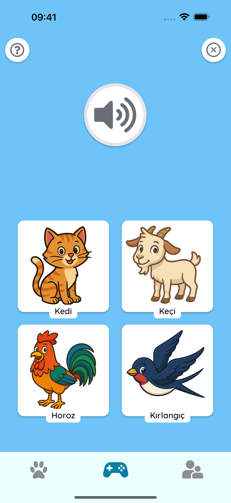

🎵 Dinleyerek Öğren
Gerçek sesleri duymak için hayvanlara dokunun. Erken konuşma gelişimi, hafıza ve eğlenceli aile anları için mükemmel!
 🧠 Oyna ve Tahmin Et
Dikkatli dinleyin ve doğru hayvanı seçin! Basit bir quiz modu, çocukların sesleri tanımayı ve hayvanları kolayca hatırlamayı öğrenmelerine yardımcı olur.
 🌍 Güvenli ve Çocuk Dostu
Reklam yok. Takip yok. Sadece renkli hayvanlar, dostane sesler ve birlikte mutlu öğrenme zamanı.